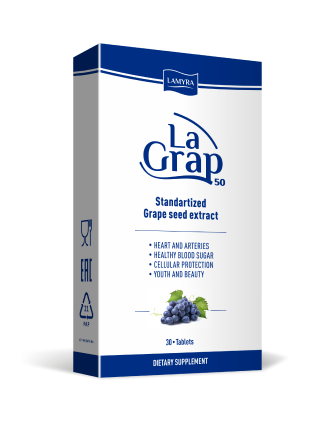

Сохрани свою молодость
с LaGrap

Возрастные изменения кожи
Первые изменения кожи в среднем заметны уже после 25 лет!
И речь не только о морщинах.
Сначала кожа приобретает серый оттенок, появляются темные пятна. Она становится тусклой и сухой. Теряет тонус, плотность, эластичность.
Старение кожи — неизбежный процесс, но его можно отсрочить!
Главные теории старения

Свободнорадикальная
теория Хартмана
Согласно ей, основной фактор старения – это свободные радикалы — активные формы кислорода, которые продуцируются в организме под действием неблагоприятных факторов. Свободно-радикальная теория считается одной из главных теорий старения.
Факторы излишней продукции свободных радикалов
- Ультрафиолет – главный внешний фактор преждевременного старения кожи - фотостарения
- Отсутствие ухода за кожей
- Малоподвижный образ жизни
- Синий свет - излучения экранов компьютеров и мобильных устройств
- Курение, алкоголь, стресс
- Гормональные нарушения
- Хронические инфекции, заболевания
- Сон менее 7-8 часов в сутки
За всю жизнь у человека образуется около 1,5 тонн свободных радикалов.
После 25-30 лет продукция антиоксидантов падает, а свободные радикалы все более аккумулируются клетками, вызывая их разрушение.
LaGrap - мощная сила против свободных радикалов
Нейтрализует главный фактор старения
- Защищает кожу от неблагоприятных факторов
- Придает кожи тонус, упругость, эластичность и ухоженный вид
- Продлевает естественную красоту и молодость кожи
Стандартизированный экстракт виноградных косточек с высоким – 95% содержанием проантоцианидинов.
Проантоцианидины широко используются в медицине и косметологии за счет своих выраженных антиоксидантных свойств, которые выше, чем у витамина Е в 50 раз, чем у витамина С - в 20 раз.
ЛаГрап действует на уровне клетки, тем самым замедляет процессы преждевременного старения всего организма.
Красота с LaGrap
- Улучшает тонус
- Повышает упругость кожи
- Нормализует водный баланс кожи
- Улучшает естественный цвет лица, «выравнивая» его
- Уменьшает отеки
- Уменьшает покраснение (в т. ч. при куперозе)
- Уменьшает уровень холестерина
- Предупреждает синдром хронической усталости
Почему LaGrap
Стандартизированный экстракт
виноградных косточекВысокое содержания проантоцианидинов – 95%
самого ценного компонентаТаблетированная форма
при производстве капсул нужны высокие температуры, которые снижают эффективность проантоцианидиновУдобство дозирования
ЛаГрап 50, ЛаГрап 100, ЛаГрап 200Как выбрать дозировку LaGrap
LaGrap 50 мг
Ступенчатая терапияLaGrap 100 мг
Возраст до 40 летLaGrap 200 мг
Возраст после 40 летПоддержание непрерывного терапевтического эффекта после основного курса приема возможен благодаря ЛаГрап 50
Вопрос - Ответ
* https://pubmed.ncbi.nlm.nih.gov/31880030/
** https://pubmed.ncbi.nlm.nih.gov/24518152/
Где купить LaGrap?
Выберите страну ниже, и вы увидите список интернет-магазинов и аптек, где сможете купить LaGrap